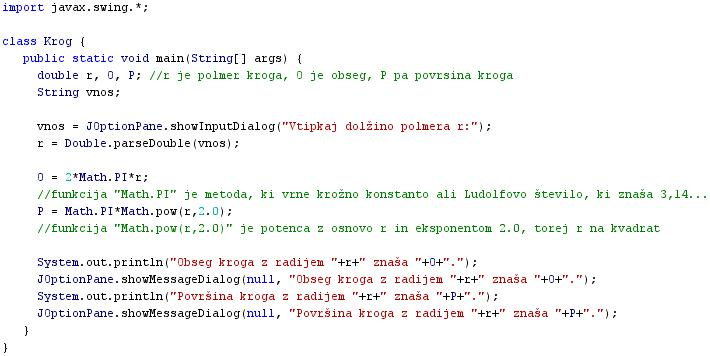

PODATKOVNE STRUKTURE
- Podatkovna struktúra je v raèunalništvu naèin shranjevanja podatkov v raèunalniku, da ga lahko uèinkovito uporabimo.
- Velikokrat bo skrbno izbrana podatkovna struktura omogoèila uporabo uèinkovitejšega algoritma.
- V izdelavi veliko vrst programov bo izbira odgovarjajoèe podatkovne strukture osnovni izdelavni premislek, saj so izkušnje pri gradnji velikih sistemov pokazale, da je težavnost izvedbe in kakovost konènega rezultata moèno odvisna od izbire najboljše podatkovne strukture.
- Ko se izberejo podatkovne strukture, postanejo uporabljeni algoritmi sorazmerno oèitni.
- Vèasih stvari delujejo v obratni smeri - izberejo podatkovne strukture, ker doloèene pomembne naloge potrebujejo algoritme, ki najbolje delujejo z doloèenimi podatkovnimi strukturami, vendar je v obeh primerih izbira primernih podatkovnih struktur odloèilna.
- Ta vpogled je vodil do veliko doloèenih izdelavnih postopkov in programskih jezikov v katerih so podatkovne strukture bolj kot algoritmi kljuèni ureditveni èinitelj.
- Objektno usmerjeni programski jeziki kot sta C++ in Java sta ena skupina jezikov, ki kažeta ta pristop.
- Osnovni gradniki veèine podatkovnih struktur so polja, zapisi in reference.
- Najpomembnejši skupini podatkovnih struktur so linearne in grafiène podaktovne strukture.
- Primeri linearnih podatkovnih struktur so seznam, sklad in vrsta.
- Najbolj znaèilne grafiène podatkovne strukture so drevesne podatkovne strukture: B-drevo, dvojiško iskalno drevo in kopica.
- Primer:
- Besedni opis problema in rešitve.
- "Zapiši program, ki bo izraèunal obseg in plošèino kroga, pri katerem poznamo polmer tega kroga. Program mora uporabnika najprej pozvati k vnosu polmera kroga": Vprašamo se, kaj vse bomo morali postoriti za rešitev problema in to opišemo v nekaj stavkih. Potek reševanja problema poskusimo premisliti èim bolj natanèno.
- Pozovi uporabnika k vnosu polmera kroga r.
- Izraèunaj obseg kroga O.
- Izraèunaj plošèino kroga P.
- V sporoèilnem oknu posreduj izraèunani vrednosti obsega in plošèine kroga.
- Izraèunani vrednosti prostornine in površine kvadra izpiši tudi v interaktivnem oknu delovnega okolja drjava.
VAJA 47:
- V okolju za pisanje izvorne kode v jeziku Java, za prevajanje in za interaktivno delo zapiši zgornji program "Krog". Pomagaj si s sliko.
- Kodo lahko tudi kopiraš iz te datoteke in jo prilepiš v okolje, v katerem pišeš programèke. Pozor: koda, ki jo boš kopiral/a, vsebuje eno, dve, tri ali štiri napake. Èe želiš, da bo program deloval, moraš napake odkriti in jih odpraviti.
- Izvorno kodo shrani pod imenom "ImePriimek47.java". ImePriimek je seveda tvoje lastno ime in priimek.
- Datoteko "ImePriimek47.java" prevedi.
- Prevedeno datoteko zaženi, preveri rezultat v interaktivnem oknu in poklièi profesorja, da vidi rezultat.
- V zvezek prepiši podatke, ki si jih vnesel, rezultate, ki jih je vrnil program, in formule, po katerih je program raèunal dobljene rezultate.
- Sam/a skonstruiraj diagram poteka v tej uèni enoti in ga nariši v zvezek.
1. Vprašanja:
1. Kaj je podatkóvna struktura?
2. Kaj so so osnovni gradniki veèine podatkovnih struktur?
3. Kateri sta najpomembnejši skupini podatkóvnih struktur?
4. Naštej nekaj linearnih podatkovnih strukur.
5. Katere so najbolj znaèilne grafiène podatkóvne strukture?
6. Naštej nekaj drevesnih podatkovnih strukur.
7. Naštej metode programskega jezika Java, ki smo jih uporabili v primeru te uène enote, in opiši njihove naloge.
8. Zapiši imena in tipe spremenljivk, ki smo jih deklarirali v primeru te uène enote.
9. Zapiši ime spremenljivke, ki je vhodna spremenljivka primera v tej uèni enoti.
10. Katere od deklariranih spremenljivk v primeru te uène enote smo ob njihovi napovedi tudi inicializirali?
2. Zapiši od ene do pet kljuènih besed, ki povzemajo vsebino te uène enote.
3. Povezave do dodatnih informacij.
Gradiva na spletnih straneh fakultete za matematiko in fiziko v Ljubljani.
Spletni priroènik proizvajalca programskega okolja Java. To je podjetje Sun.
|